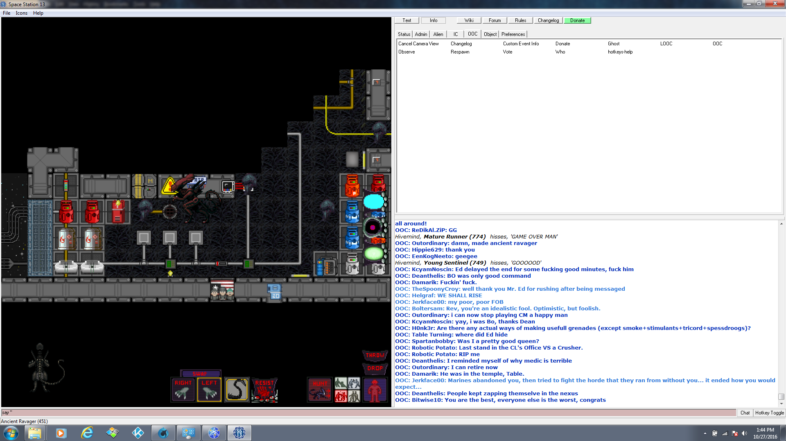
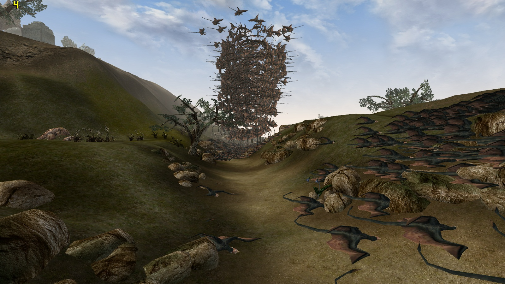

Here at ZI Industries, we look to add value to the gaming community! You could apply the same thing to the Mass effect 3 ending as well. I really liked the amount of customization that they allow in the creation process.
How do heroics feel as a whole? In this case, it was a weekend of playing nothing but RIFT. Hard Mode drops a specific tier of gear. Hard Mode flashpoints drop Tionese, Eternity Vault drops Columni, Karagga's Palace drops Rakata, and Explosive Conflict drops Black Hole.
Space Station 13 Development
Open MW Development